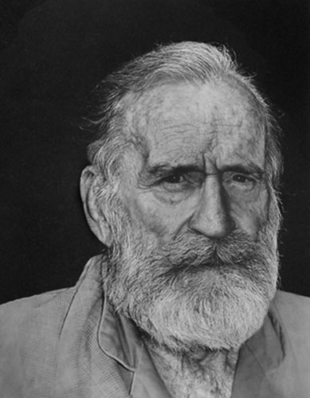

The Economics of J. Fagg Foster
Professor of Economics
University of Denver 1946-1976
By Gladys Parker Foster
J. Fagg Foster was a gifted scholar and lecturer, one who wrote and published very little and who therefore left mostly an oral legacy, but a legacy nonetheless worth preserving and making as widely accessible as possible. That is my purpose in publishing these five chapters - from five courses that he taught at the University of Denver. The first comes from notes written in Foster's own hand, on 5x7 note cards, and expanded from my own lecture notes, for The History of Economic Thought. The second and third chapters are from notes taken by myself as a student in two other courses, Comparative Economic Systems and Business Cycle Theory. The fourth and fifth chapters come from notes taken by other students, Baldwin Ranson and Kenneth Powers, in The American Contribution and Value and Its Determinants.
Two questions: Are these lectures worthwhile and, if so, what is it about the work of J. Fagg Foster that makes them so? What is it that inspired so much comment and enthusiasm, not to mention so many professors taking the classes? Most of my professors took them. Students and professors talked about them at social events. Class discussions were spirited. It was not his jokes, not his oratorical skills - although he did have a considerable talent for lecturing. It goes beyond that. It has to be the intellectual content, the power of ideas, the relevance to the real world, making sense out of things. Yes, they are worthwhile, and it is some of these attributes that make them so and which should become apparent in the work that follows.
Perhaps there is an additional circumstance, and that is the time, the period during which he was teaching. The thirty years following World War II, which were the years of Foster's academic career, constituted a time of both hope and considerable economic activity in the United States. The country had survived the Great Depression and World War II, two events that were not only cataclysmic - they were big, and they were painful - but in which the outcomes were in doubt but which turned out to be favorable to the U.S. The opposite, for both, could well have been the case. Actually, what brought an end to the Depression was the entry of the U.S. into the war; which is an additional story in itself, one that should be considered somewhere. Also a part of the story is the G.I. Bill, an important act that should always be there for veterans, which attracted lots of students and which, arguably, was a sound investment for the country. The college campus seemed the place to be.
The students were, I think, an important part of the story. A high percentage were veterans, and this meant that they were older, and, more important, experienced - having just survived a grueling experience-war-on top of another grueling experience - the severe economic Depression of the 1930s and the early 1940s. They weren't jaded or bored. They were excited about life and its opportunities. They were eager to learn, to understand. I frequently heard comments from professors about the quality of the students.
This also suggests yet another story, one not to be considered here but perhaps elsewhere - should the U.S. finance higher education for everyone qualified?
